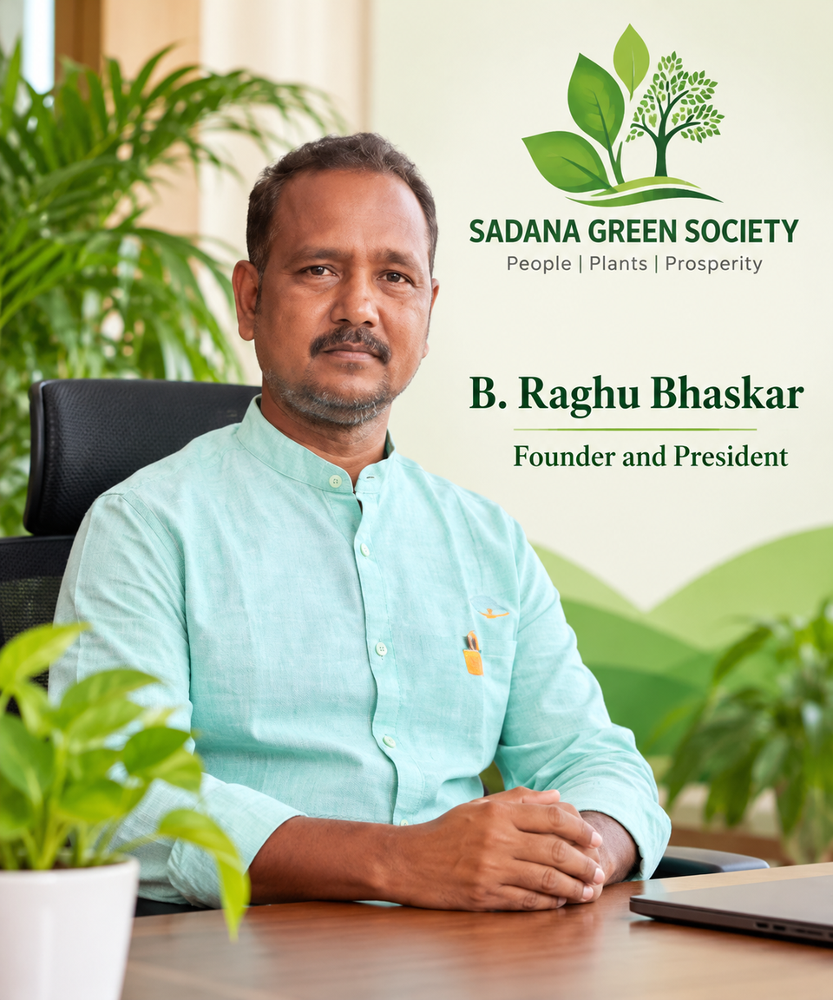

About Sadana Green Society
An environmental and community-focused organisation working across Andhra Pradesh, Telangana, and Karnataka.

Committed to Farmers and Ecological Renewal
Sadana Green Society (SGS) was founded by B. Raghu Bhaskar with an unwavering commitment to bridging grassroots agriculture with sustainable environmental stewardship.
Operating out of Kurnool, SGS was conceived to tackle the dual challenges facing farmers in the Deccan Plateau: soil depletion and irregular monsoonal rainfall, alongside vulnerability to volatile crop markets. By introducing agroforestry and low-methane paddy techniques, SGS provides farmers with sustainable, diversified income assets.
8 Areas of Comprehensive Work
How Sadana Green Society delivers long-term impact across the region.
Agroforestry & New Plantations
Distributing high-yielding saplings and guiding boundary and block planting to enhance green canopy and farmer wealth.
Existing Plantation Stewardship
Supporting farmers in monitoring, pruning, and maintaining established trees to maximize timber and fruit yields.
Carbon Credit Programmes
Guiding farmers through registry enrollment, GPS mapping, and transparent carbon revenue sharing.
Sustainable Agriculture
Advocating resource-efficient farming methods, organic composting, and reducing synthetic chemical dependency.
Alternate Wetting & Drying (AWD)
Equipping rice growers with field water tubes, saving irrigation power and cutting methane emissions.
Farmer Livelihood Enhancement
Providing market linkage guidance, value-addition training, and risk diversification across three states.
Climate Change Mitigation
Creating verified, permanent carbon sinks in tree trunks, root zones, and soil organic matter.
Community Ecological Awareness
Conducting village meetings and educational workshops in Telugu on water conservation and soil health.
How We Work with Farmers
A straightforward, accountable 4-stage process from initial conversation to audited results.
Listen
We meet farming communities at the village level, listening to local water and soil constraints and explaining programs openly.
Enrol
Interested farmers are formally registered with verified land survey records, water facility checks, and GPS geotagging.
Implement
Technical field teams support farmers directly with sapling delivery, spacing, pit preparation, and AWD pipe installation.
Monitor & Report
We maintain comprehensive digital logs, verify survival rates, and share transparent audit data with institutional partners.